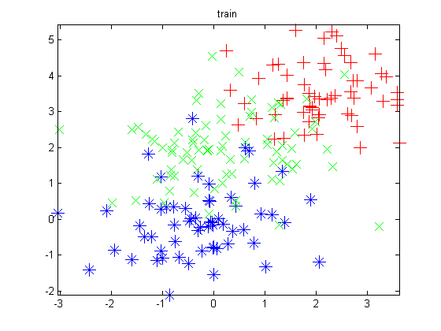
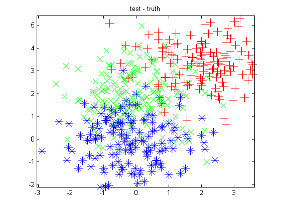
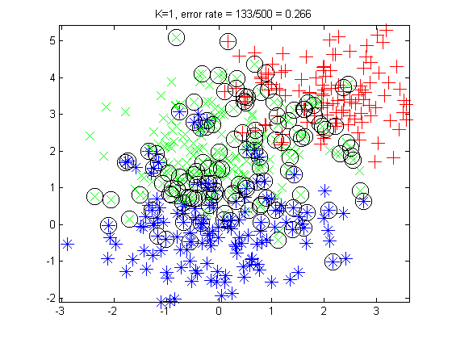
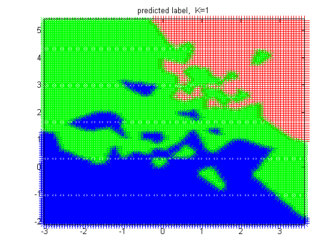
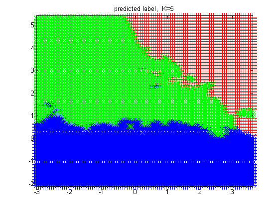
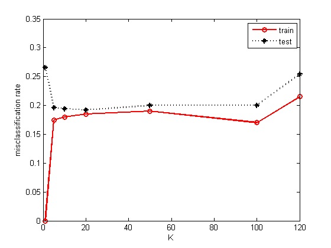

Classify using KNN
Contents
function knnClassifyDemo()
load data
tmp = dlmread('knnClassify3CTrain.txt'); Xtrain = tmp(:,1:2); ytrain = tmp(:,3); tmp = dlmread('knnClassify3CTest.txt'); Xtest = tmp(:,1:2); ytest = tmp(:,3); Ntest = size(Xtest,1); Ntrain = size(Xtrain,1)
Ntrain = 200
Plot data
range = [min(Xtrain(:,1)) max(Xtrain(:,1)) min(Xtrain(:,2)) max(Xtrain(:,2))]; figure; plotLabeledData(Xtrain, ytrain) title('train') axis(range) printPmtkFigure('knnClassifyTrainData'); figure; plotLabeledData(Xtest, ytest) title('test - truth') axis(range) printPmtkFigure('knnClassifyTestData'); 
Classify and plot predictions on test data
Ks = [1 5]; for ki=1:length(Ks) K = Ks(ki); model = knnFit(Xtrain, ytrain, K); [ypred] = knnPredict(model, Xtest); figure; plotLabeledData(Xtest, ypred); err = find(ypred(:) ~= ytest(:)); nerrors = length(err); title(sprintf('K=%d, error rate = %d/%d = %5.3f', ... K, nerrors, Ntest, nerrors/Ntest)) axis(range) % Put circles around errors hold on h=plot(Xtest(err,1), Xtest(err,2), 'ko'); set(h,'markersize',15) printPmtkFigure(sprintf('knnClassifyTestK%d', K)); end

Plot predicted class across a 2d grid of points
cf HTF fig 2.2
XtestGrid = makeGrid2d(Xtrain); for K=Ks(:)' model = knnFit(Xtrain, ytrain, K); ypredGrid = knnPredict(model, XtestGrid); figure; plotLabeledData(XtestGrid, ypredGrid) %axis([min(x1range) max(x1range) min(x2range) max(x2range)]) axis(range) %title(sprintf('mode of predictive density, K=%d', K)) title(sprintf('predicted label, K=%d', K)) C = 3; printPmtkFigure(sprintf('knnClassifyGridC%dK%d.eps', 3, K)) end 
Plot error vs K
Ks = [1 5 10 20 50 100 120]; for ki=1:length(Ks) K = Ks(ki); model = knnFit(Xtrain, ytrain, K); [ypred] = knnPredict(model, Xtest); err = find(ypred(:) ~= ytest(:)); nerrors = length(err); errRateTest(ki) = nerrors/Ntest; % compute error on training set [ypred] = knnPredict(model, Xtrain); err = find(ypred(:) ~= ytrain(:)); nerrors = length(err); errRateTrain(ki) = nerrors/Ntrain; end figure; plot(Ks, errRateTrain, 'ro-', Ks, errRateTest, 'k*:', 'linewidth', 2); legend('train', 'test') xlabel('K'); ylabel('misclassification rate')
end %%%%%%%%%%%%% function plotLabeledData(X, y) markers = {'r+', 'b*', 'gx'}; C = max(y); for c=1:C ndx = find(y==c); h=plot(X(ndx,1), X(ndx,2), markers{c}); set(h,'markersize',12) hold on end end